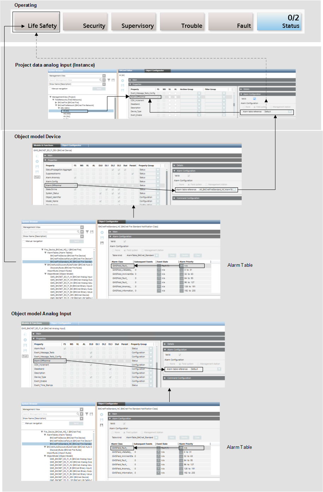

Example of Alarm Table Configuration
The example displays how an alarm is configured in Desigo CC to display the corresponding event on the Summary bar. In particular, the configuration of the Alarm.OffNormal property is based on the BACnetFireStandard_NC alarm table. This is linked on the device object and used as default by all the other objects, with the exception of the LifeSafetyPoint (LSP) and LifeSafetyZone (LSZ) objects that are based on the BACnetFireDevice alarm table.
Alarm Table Standard Configuration | |
Object | Alarm Setting |
Object models1) | Default |
Device | Alarm table |
1) | LSP and LSZ object models are based on the BACnetFireDevice alarm table. |
